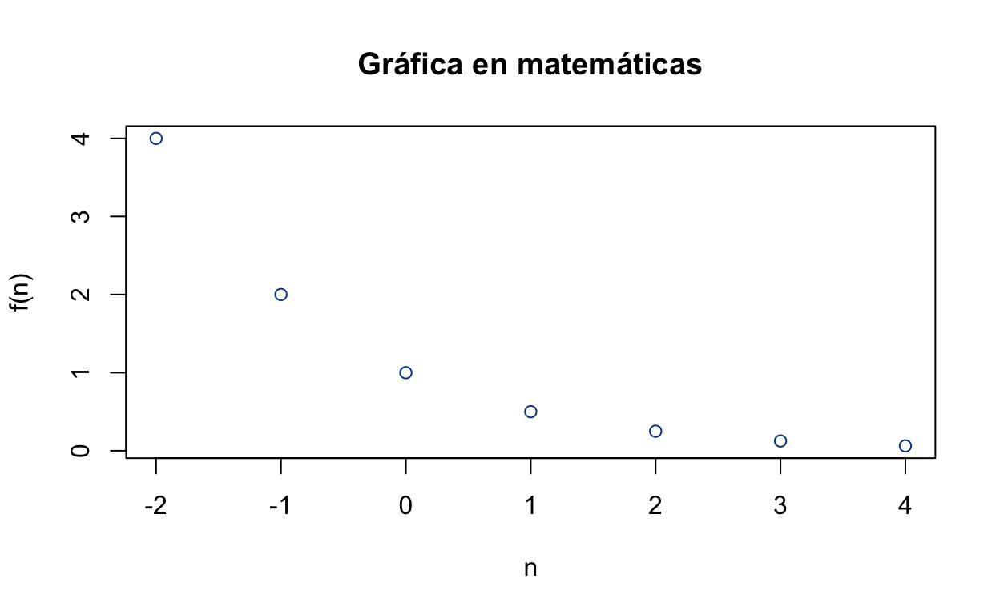
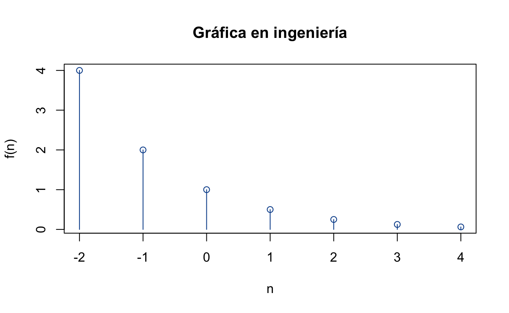
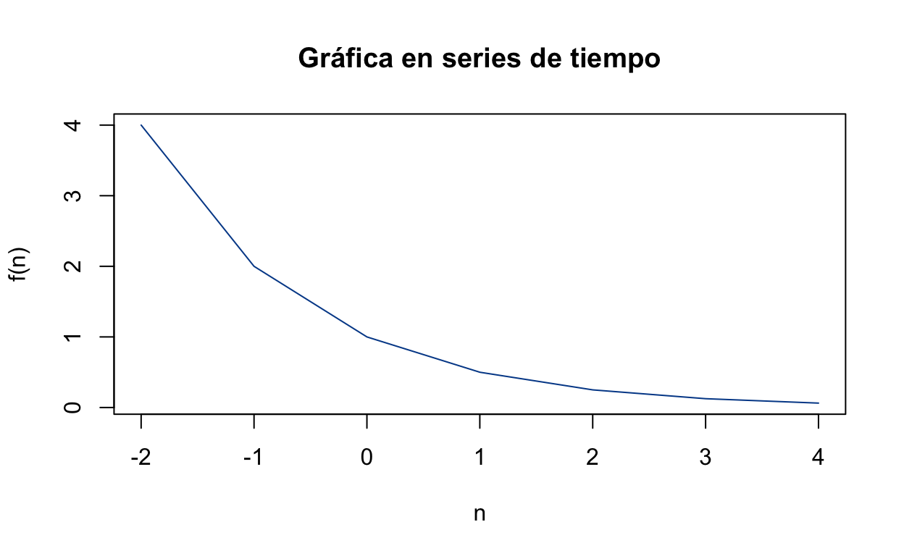
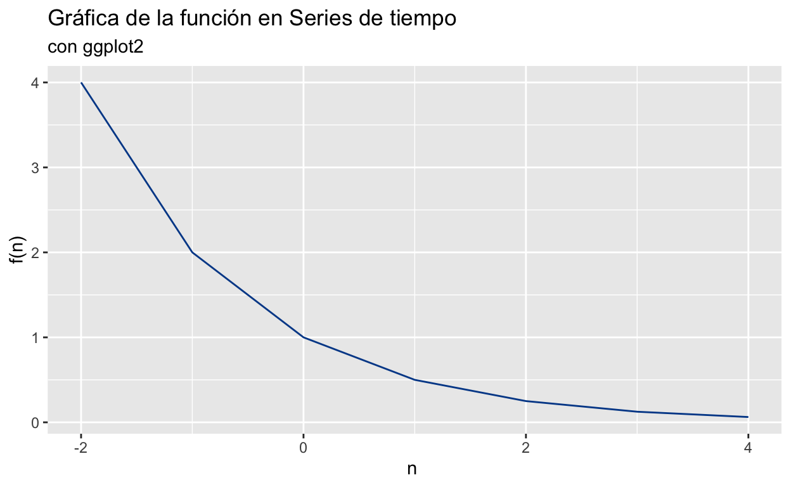

Funciones en tiempo discreto
Cargamos bibliotecas.
Gráficas de funciones en tiempo discreto
n <- -2:4
fun1 <- function(n){
return(0.5^n)
}
f <- fun1(n)
tabulacion <- data.frame(x = n, y = f)
DT::datatable(tabulacion) # poco uso plot(n,f, type = "p",col = "#004A97",
main = "Gráfica en matemáticas",
xlab = "n",
ylab = "f(n)")
plot(n,f, type = "p", col = "#004A97",
main = "Gráfica en ingeniería",
xlab = "n",
ylab = "f(n)")
lines(n,f, type = "h", col = "#004A97")
plot(n,f, type = "l", col = "#004A97",
main = "Gráfica en series de tiempo",
xlab = "n",
ylab = "f(n)")
ggplot(tabulacion,aes(x)) + geom_line(aes(y=y), colour="#004A97") +
labs(title = "Gráfica de la función en Series de tiempo",
subtitle = "con ggplot2",
y = "f(n)",
x = "n ")
Traslación horizontal
n <- -2:4
n1 <- n+1
nm1 <- n-1
f <- fun1(n)
datos <- data.frame(x=n, x1 = n1, xm1 = nm1,
y = f, y1 = fun1(n1-1), ym1 = fun1(nm1+1) )
fig <- plot_ly(datos,
x = ~x,
y = ~y,
name = "f_t",
#name = TeX("f_t"),
type = 'scatter',
mode = 'lines+markers') %>%
add_trace(x = ~x1,
y = ~y1,
name = "f_{t-1}",
#name = TeX("f_{t-1}"),
mode = "lines+markers",
type = "scatter") %>%
add_trace(x = ~xm1,
y = ~ym1,
name = "f_{t+1}",
#name = TeX("f_{t+1}"),
mode = "lines+markers",
type = "scatter") %>%
#config(mathjax = 'cdn') %>%
layout(title = "Gráfica de la función y tralaciones horizontales",
xaxis = list(title ="n"))
figTraslación vertical
n <- -2:4
f <- fun1(n)
datos <- data.frame(x=n, y = f, y1 = f+1, ym1 = f-1)
fig <- plot_ly(datos,
x = ~x,
y = ~y,
name = "f_t",
type = 'scatter',
mode = 'lines+markers') %>%
add_trace(y = ~y1,
name = "f_{t}+1",
mode = "lines+markers",
type = "scatter") %>%
add_trace(y = ~ym1,
name = "f_{t}-1",
mode = "lines+markers",
type = "scatter") %>%
layout(title = "Gráfica de la función y traslaciones verticales",
xaxis = list(title ="n"))
figFunciones trigonométricas en tiempo discreto
n <- -10:10
f <- cos(2*n)
f1 <- cos((5/3) * pi * n)
datos <- data.frame(x=n, y = f, y1 = f1)
fig <- plot_ly(datos,
x = ~x,
y = ~y,
name = "función no periodica",
type = 'scatter',
mode = 'lines+markers') %>%
add_trace(y = ~y1,
name = "función periodica",
mode = "lines+markers",
type = "scatter") %>%
layout(title = "Gráfica",
xaxis = list(title ="n"))
figHeaviside y delta de Kronecker
heaviside(-2:8) [1] 0 0 1 1 1 1 1 1 1 1 1krone(-2:9,7) [1] 0 0 0 0 0 0 0 0 0 1 0 0Ecuaciones en diferencias lineales
Sea la siguiente ecuación en diferencias en formato de atraso
\[y_t - 5y_{t-1} + 6y_{t-2} = 3x_{t-1} + 5x_{t-2},\;\;x_t=(0.5)^t\;\;t\geq 0,\;\;y_{-1}=\frac{11}{6}, y_{-2}=\frac{37}{36}\] Vamos a realizar dos iteraciones para encontrar los valores de \(y_0\) y \(y_{1}\)
y = c(37/36, 11/6)
y_0 = 5 * y[2] - 6 * y[1] # t = 0
y <- c(y,y_0)
y_1= 3 * (0.5) ** (0) + 5 * y[3] - 6 * y[2] # t = 1
y <- c(y,y_1)
y[1] 1.027778 1.833333 3.000000 7.000000El sistema anterior en formato de adelanto es
\[y_{t+2} -5y_{t+1} + 6y_{t} = 3x_{t+1}+5x_t,\;\;x_t=(0.5)^t\;\;t\geq 0,\;\;y_{1}=7, y_{0}=3\] ¿Se distingue la convención de las condiciones iniciales? ¿Cuál sería?
La solución analítica de este sistema es
\[y_t = \frac{18}{5}(3)^t - \frac{7}{3}(2)^t + \frac{26}{15}(0.5)^t,\;\;t\geq 0\]
Evaluamos esta función \(t\in\{0,1,..,5\}\)
yt = function(t){
y <- (18 / 5) * 3 ^ t - (7 / 3) * 2 ^ t + (26 / 15) * 0.5 ^ t
return(y)
}
t <- 0:5
yt(t)[1] 3.0000 7.0000 23.5000 78.7500 254.3750 800.1875Vamos a crear un programa para iterar la ecuación en diferencias y ver la coincidencia con la solución análitica. Para esto vamos a pensar en el formato de adelanto y la siguiente estructura
\[a_2y[t+2]+a_{1}y[t+1]+a_0y[t]=b_2x[t+2]+b_{1}x[t+1]+b_0x[t]\]
simulacion <- function(a, b, y0, x, n){
#a = [a0,a1,a2]
#b = [b0,b1,b2]
#y0 = [y_0, y_1]
#x = función
#n = punto final de simulacion, comienza en 0
y = y0[1]
y[2] = y0[2]
x <- x(0:n)
for(t in 1:(n - 1)){
y[t + 2] = (b[3] / a[3]) * x[t + 2] +
(b[2] / a[3]) * x[t + 1] + (b[1] /a[3] ) * x[t] -
(a[2] / a[3]) * y[t + 1] - (a[1] / a[3]) * y[t]
}
return(y)
}x <- function(t){
return((0.5) ^ t)
}
a <- c(6 , -5, 1)
b <- c(5, 3, 0)
y0 <- c(3, 7)
n <- 5
y <- simulacion(a,b,y0, x, n)
y[1] 3.0000 7.0000 23.5000 78.7500 254.3750 800.1875Realizamos la gráfica de la solución
Transformada \(\mathscr{Z}\)
La transformada \(\mathscr{Z}\) para los sistemas en tiempo discreto, juega el mismo papel que la transformada de Laplace para los sistemas en tiempo continuo.
Enlace para documento de Transformada \(\mathscr{Z}\)
Sistemas en diferencias
Series de tiempo
Es una colección de variables aleatorias
\[\left\{ X_t:t\in T\right\}\] donde \(T\) es un conjunto numerable, \(X_t\in S\), \(S\) es llamado el espacio de estados.
Un PED \(\{X_t\}\)1 puede considerarse como una función de dos variables \[X:T\times \Omega\longrightarrow S\]
Para cada \(\omega\in\Omega\) fijo, la función \(t\rightarrow X_t(\Omega)\) es llamada una realización del proceso (Rincón 2016).
Es una realización de un Proceso Estocástico Discreto
\[\left\{ X_t:t\in T\right\}\] donde \(T\) es un conjunto ordenado cronológicamente cuyos elementos son equidistantesFigure 1: Trayectoria para \(t=n={0,1,2,...}\)
Serie de tiempo estacionaria
Un PED \(\{X_t\}\) es estrictamente estacionario si y sólo si para cualesquiera \(t_1 < t_2 < \dots < t_n\) \(n\geq1\), la distribución de probabilidad conjunta de \([X_{t_1},\dots,X_{t_n}]\) coincide con la de \([X_{t_1+h},\dots,X_{t_n+h}]\) para \(h\in\mathbb{Z}-\{0\}\)
Un PED \(\{X_t\}\) es estacionario en media o débilmente estacionario de primer orden si y solo si \(\mathbb{E}(X_t)<\infty\) es constante
Un PED \(\{X_t\}\) es estacionario en autocovarianza o débilmente estacionario de segundo orden si y solo si:
- \(\mathbb{E}(X_t)<\infty\) y \(\mathbb{V}ar(X_t)<\infty\) son constantes y finitas, es decir, no hay dependencia de \(t\)
- \(\mathbb{C}ov(X_t,X_{t-k})\) a lo sumo de pende de \(k\) pero no depende de \(t\)
para trabajar con series de tiempo se pide normalmente que se suponga que la serie es debilmente estacionaria de segundo orden. Por el momento no se realiza esta prueba a los datos de CoVID, en secciones posteriores regresamos a esta pregunta. Por el momento se supondrá \(\{C_t\}\) es estacionaria.
¿Existe una relación entre \(C_t\) y \(C_{t-1},C_{t-2},\dots,C_{t-k},\)?, la función de autorrelación representa la duración y la intensidad de la memoria de un proceso, podría decirse que es una medida de qué tanto afectan los valores pasados a los actuales.
La autocovarianza de orden \(k\), de un PED \(\{X_t\}\) estacionario se define como
\[\gamma_k=\mathbb{C}ov(X_t,X_{t+k})\]
La autocorrelación simple de orden k, de un PED \(\{X_t\}\) estacionario se define como
\[\rho_k=\frac{\gamma_k}{\gamma_0};\;\; k=0,1\dots\]
La función \(k\rightarrow\rho_k\) es llamada la función de autocorrelación (ACF), el dominio de la función se deduce a partir del supuesto de estacionariedad, esta función nos da la relación entre entre \(X_t\) y \(X_{t-k}\).
En la práctica se tienen que utilizar estimadores, el valor numérico para el estimador \(\hat\rho_k\) es
\[r_{k} = \frac{\sum\limits_{t=k+1}^T (x_{t}-\bar{x})(x_{t-k}-\bar{x})} {\sum\limits_{t=1}^T (x_{t}-\bar{x})^2}\]
donde \(x_t\) es el valor observado de \(X_t\), \(T\) denota el número de datos. Cada valor se considera individualmente significativo al \(5%\) cuando \(r_k>1.96/\sqrt{T}\). Si se quiere hacer una prueba conjunta de significancia de las \(K\) primeras autocorrelaciones usualmente se calcula el estadístico de Ljuang-Box que aproximadamente sigue una distribución \(~\chi^2(K)\)
\[Q_{LB}=T(T-2)\sum_{k=1}^{K}\frac{r_k^2}{T-k}\]
la hipótesis nula es \(\rho_1=\ldots\rho_K=0\).
Existe una medida del grado de asociación lineal entre dos componentes de \(\{X_t\}\) que descarta que dicha asociación suceda por los componentes intermedios entre ellos, precisando:
La autocorrelación parcial de orden \(k\) de un PED \(\{X_t\}\) estacionario se define como el parámetro \(\phi_{kk}\) de la regresión
\[\begin{equation} \tilde{X}_t=\phi_{k1}\tilde{X}_{t-1}+\phi_{k2}\tilde{X}_{t-2}+\dots+\phi_{kk}\tilde{X}_{t-k}+ U_t \tag{1} \end{equation}\]
con \(\tilde{X}_{t-i}=X_{t-i}-\mu_X\), \(i = 0,\dots,k\), \(U_t\) independiente de \(Y_{t-i}\) para todo \(i\geq 1\), la función \(k\rightarrow\phi_{kk}\) suele llamarse función de autocorrelación parcial (PACF) del proceso.
Existen por lo menos dos formas de estimar esta cantidad, solo se menciona una de ellas que es realizar la regresión que indica la ecuación (1), cada estimación puede considerarse individualmente significativa al \(5\%\) cuando \(\phi_{kk}>1.96/\sqrt{T}\).
La ACF se puede calcular para series no estacionarias, cuando la serie no es estacionaria la ACF decrece muy lento. Hasta el momento se ha supuesto que \(\{C_t\}\) es estacionaria, ¿qué tanto se puede sostener esta hipótesis al observar su correlograma?, todo depende de la interpretación de muy lento, se sigue sosteniendo la hipótesis de estacionariedad.
Modelos ARMA(\(p\),\(q\))
Un proceso estocástico estacionario \(\{X_t\}\) sigue un modelo autorregresivo-media móvil de orden \((p,q)\) o ARMA(\(p,q\)), si y sólo si
\[X_t=\mu+\sum_{i=1}^p\phi_iX_{t-i}-\sum_{j=1}^q\theta_jA_{t-j}+A_t\] para \(t\in\mathbb{Z}\), donde \(\{A_t\}\sim NIID(0,\sigma_A^2)\), \(\mu\), \(\phi_i\) y \(\theta_j\) son parametros.
para la condición de estacionariedad se tiene que las soluciones de la siguiente ecuación están fuera del círculo unitario
\[1-\sum_{i=1}^p\phi_ix^i=0\] se dice que el modelo es invertible si las soluciones de la siguente ecuación están fuera del círculo unitario
\[1-\sum_{j=1}^q\theta_jx^j=0\]
Cuando los parámetros \(\theta_j\) son nulos se dice que el proceso sigue un modelo AR(\(p\))=ARMA(\(p,0\)), si los parámetros \(\phi_i\) son nulos se dice que el proceso sigue un modelo MA(\(q\))=ARMA(\(0,q\))
Los procesos estacionarios ARMA(\(p,q\)) se caracterizan por el comportamiento conjunto de su ACF y PACF, en la Figura ?? se muestra el comportamiento, la tabla se se tomó del siguiente enlace

Figure 2: Tabla de ACF y PACF
Si se revisan las gráficas de ACF y PACF para \(\{C_t\}\) entonces probablemente la variable \(C_t\) se pueda escribir como un modelo autorregresivo de orden \(p\), AR(p), es decir
\[C_t=\beta_0+\beta_1 C_{t-1}+\beta_{t-2}C_{t-2}+\dots+\beta_{t-p}C_{t-p}+U_t\]
suponiendo \(\mathbb{E}(U_t|C_{t-1},C_{t-2},\dots)=0\). Con base en los resultados obtenidos de autocorrelación se realizan las regresiones para 1, 2 y 3 retardos.
Serie de tiempo no estacionaria
Si la serie presenta una raíz unitaria (y con esto es no estacionaria), es decir, \(z=1\) es una solución de la ecuación
\[1-\beta_1z-\beta_2z^2-\dots+\beta_pz^p=0\] entonces la serie presenta una tendencia estocástica, lo que implica que los coeficientes y los estadísticos \(t\) de las regresiones previamente realizados no tienen buenas características (los coeficientes son sesgados y el estadístico no se distribuye de forma normal). Para revisar si es el caso, se realiza el contraste de Dickey-Fuller aumentado (Stock and Watson 2012), para ello se estima el siguiente modelo 2
\[\begin{equation} \Delta C_t=\beta_0+\delta C_{t-1} + \gamma_1\Delta C_{t-1}+\gamma_2 C _{t-2}+\dots+\gamma_p \Delta C_{t-p+1}+u_t \tag{2} \end{equation}\]
donde \[H_0:\delta=0\;\;\text{vs}\;\;H_1:\delta<0 \]
bajo la hipótesis nula, \(C_t\)
tiene tendencia estocástica, bajo la hipótesis alternativa, \(C_t\) es estacionaria.
Para calcular esta regresión se tiene que proponer un orden \(p\) 3, la instrucción
urca::ur.df nos proporciona un criterio de selección y nos
permite configurar la regresión como en la ecuación (2)
Transformaciones de series no estacionarias
Algunos series no estacionarias se pueden transformar para convertirlas en series estacionarias. Normalmente se tienen dos transformaciones:
- Transformación de Box-Cox para estabilizar la dispersión, es decir, obtener estacionariedad en la varianza
\[w_t=\begin{cases} log(x_t)&\lambda=0\\ &\\ \frac{x_t^\lambda-1}{\lambda}&\lambda\neq 0 \end{cases}\]
- Aplicar diferencias es los datos para estabilizar el nivel; es decir, obtener estacionariedad en media
Se recomienda trabajar con las diferencias de \(C_t\) (Stock and Watson 2012)-(Wooldridge 2010)-(Holmes, M. D, and Ward 2020), es decir, con \(\Delta C_t=C_t-C_{t-1}\) o con las segundas diferencias \(\Delta^2 C_t=C_t-2C_{t-1}+C_{t-2}\), de tal forma que al aplicar la preba de Dickey-Fuller a la serie resultante se rechaze la hipétesis nula en favor de una serie estacionaria.
Existen varias formas de abordar este problema, se ha elegido
utilizar la instrucción forecast::ndiffs que calcula la
cantidad de diferencias necesarias, una vez que se tiene este número se
aplica la prueba mencionada para verificar dicha situación.
Modelos ARIMA(\(p,d,q\))
Se definen algunos conceptos para escribir la definición del modelo
El operador de retardo se define como
\[B^dX_t=X_{t-d};\;\;d\in\mathbb{N}\]
El operador de diferencia se define como
\[\Delta^dX_t=(1-B)^dX_t;\;\;d\in\mathbb{N}\]
Un proceso estocástico \(\{X_t\}\) es integrado de orden \(d\), \(d\in\mathbb{N}\), si y sólo si el proceso \(\{\Delta^d X_t\}\) sigue un modelo ARMA(\(p,q\)) estacionario e invertible.
Un proceso estocástico \(\{X_t\}\) es integrado de orden \(d\) si y sólo si \(\{X_t\}\) sigue un modelo autorregresivo-integrado-media móvil de orden \((p,d,q)\), o ARIMA(\(p,d,q\)) del tipo
\[\phi(B)\Delta^dX_t=\mu+\theta(B)A_t\]
donde \(\{A_t\}\sim NIID(0,\sigma_A^2)\), \(\mu\), \(\phi_i\) y \(\theta_j\) son parámetros y
\[1-\sum_{i=1}^p\phi_ix^i=\phi(x)\]
\[1-\sum_{j=1}^q\theta_jx^j=\theta(x)\]
Siguiendo las definiciones se puede decir que un proceso \(\{X_t\}\) que sigue un modelo ARIMA(\(p,d,q\)) equivale a que el proceso estacionario \(\{\Delta^d X_t\}\) siga un modelo ARMA(\(p,q\))
Estimación del modelo de un serie de tiempo
Se estima el modelo ARIMA(\(p,d,q\)) para \(\{C_t\}\) se utilizan las herramientas
prediseñadas en R, en específico forecast::auto.arima, que
tiene las siguientes características
- Se estima el modelo con la estructura \(\phi(B)(\Delta^dX_t-\mu_1)=(1+\sum_{j=1}^q\theta_jB^j)A_t\)
- Para elegir al mejor modelo se prefiere utilizar el criterio de información de Akaike corregido
- Se utiliza el método MLE (Maximum likelihood estimation) para encontrar los parámetros
Teniendo esto en cuenta, se obtiene el modelo ARIMA(\(0,2,1\)), que coincide con lo obtenido en la ecuación (??)
Predicción de una serie de tiempo
Para las predicciones se toma el modelo (??) y se evalua en \(t+h|T\), es decir, se estimará \(\hat C_{t+h|T}\) sujeto a que se conoce hasta el dato \(T\)-ésimo, para cada valor entero de \(h\geq1\) se obtendrá una predicción, la estimación debe ser en orden, pues si no se tiene el dato \(C_t\) para un determinado tiempo este debe ser sustituido por su estimado previamente obtenido. Lo usual es remplazar \(A_t\) pata \(t\geq T+1\) con \(0\). El modelo de predicción queda como
\[\begin{align} \hat W_{t+h|T}=2W_{t+h-1|T}-W_{t+h-2|T}-0.5860A_{t+h-1|T}+A_{t+h|T} \notag \\ \hat C_{t+h|T}=(\lambda W_{t+h|T}+1)^{1/\lambda} \tag{3} \end{align}\]
Cada predicción tiene asociada un intervalo de confianza (Hyndman and Athanasopoulos 2018), en particular el intervalo de confianza para la primer estimación \(\hat W_{t+1|T}\) es \(\hat W_{t+1|T}\pm 1.96\hat\sigma_A\). La Figura ?? muestra la predicción y dos intervalos con nivel de confianza diferente.
para no saturar la notación se estará utilizando \(\{X_t\}\) para referirse aun proceso estocástico discreto↩︎
segun (Stock and Watson 2012) hay un subindice de más pero segun esta prueba que parece correcta hay un subindice de menos↩︎
normalmente se elige de tal forma que los residuales de la regresión sean ruido blanco↩︎